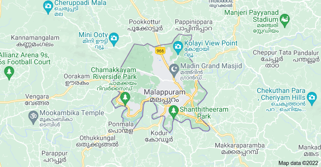
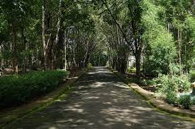
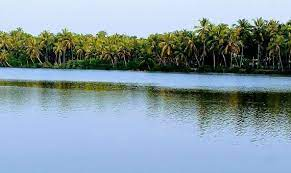
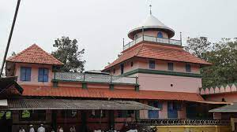

Malappuram is a city in the Indian state of Kerala, spread over an area of 58.20 km². The first municipality in the district formed in 1970, Malappuram serves as the administrative headquarters of Malappuram district.

Tourist Spots

Nilambur Teak Museum
Nilambur is famous for their teak produce, which is a kind of tree used for woodwork and is easily available throughout the country.

Biyyam Kayal
The region of Malappuram is full of backwater lakes created inland, and one of the most famous ones in the region is the Biyyam Kayal.

Mamburam
MA famous Muslim Pilgrimage in the Malappuram district, Mamburam is a shrine dedicated to the dead bodies of some of the primary Thangals of Kerala.